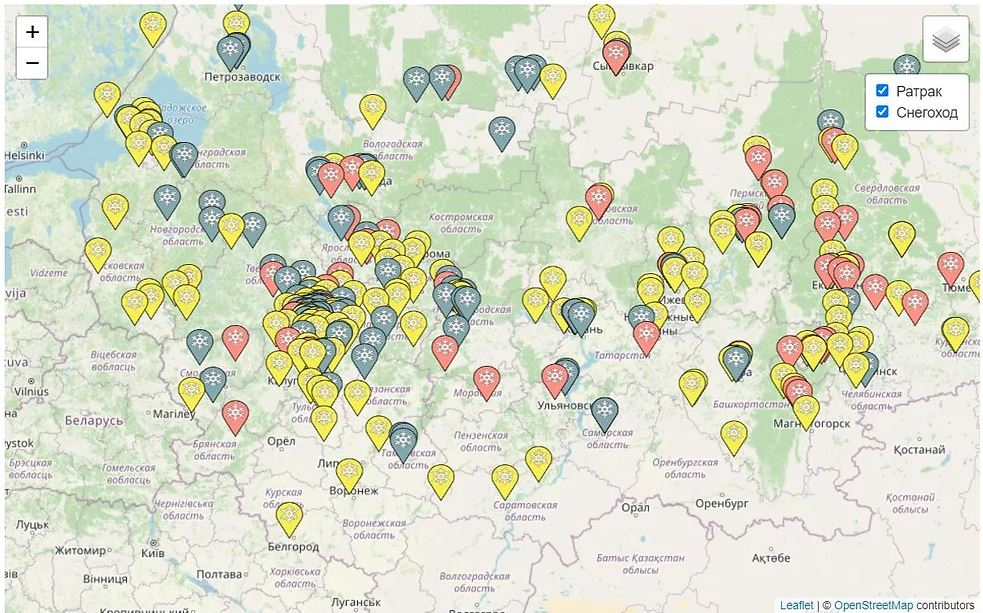
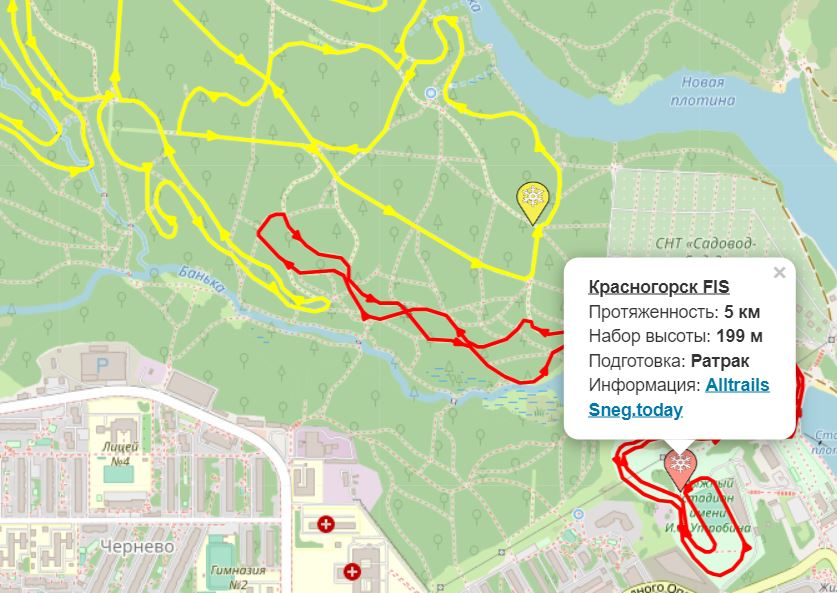
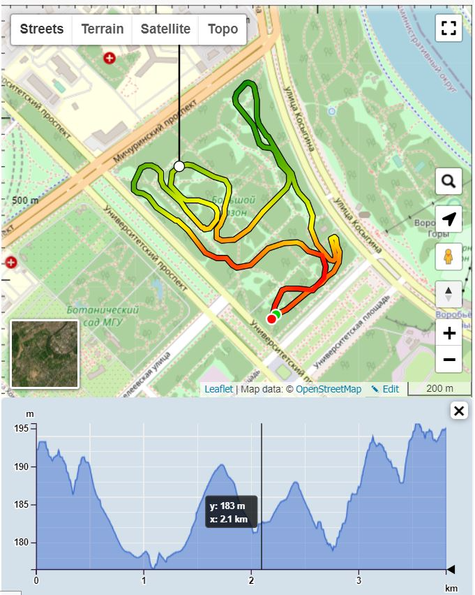

Interactive map of cross-country ski tracks
Cross country ski is considered one of the most popular sports in Russia, along with football and running. However, until now, there was no GIS project in Russia that could help find a suitable route for this beautiful winter sport. Link to the GIS project "Russia's cross-country ski trails"
Conceptual model
First of all I decided to look at existing projects. There are great projects in Switzerland, Norway, where you can find the information you need about the cross country ski tracks, see the difficulty of the track, for which style the track exists, and also find out when the last time a ratrak was on the track.
Realizing that not having enough funding would be difficult to do something like this, I decided to reduce the task a bit. That is, I did not add a detailed description of the track, only a link to the club that supports the track.
So, I decided to write to one of the most popular sites about ski racing in Russia - "Ski Sport". Together with the editorial team, we made a conceptual plan of the GIS project and decided on a table of attributes. It was decided that the complexity of the tracks would be highlighted by color (red - hard track, blue - easy track).
Project realization
We decided to use the open source library Leaflet as the basis. OSM is used as the base layer. The hardest part was to collect track data and some track information. At the moment, the map contains about 500 tracks of ski tracks. More than 90% of them were compiled by me on the basis of data obtained from the Internet, Strava and letters of stakeholders - fans of ski racing from all around Russia. It was great to see that people were willing to come to the help and sent all kinds of information about their "home" track. Only thanks to them was it possible to create this product.
A general view of the map is shown below:
On the top right of the map you can choose which machines are used to prepare the track - ratrak or snowmobile. Also by clicking on each track or marker you can find information about the name, length, elevation, type of track preparation and a link to the track's website.
Thus, this is the first project that has integrated Russian cross country ski tracks into a single layer. We are very happy that this map is used by many Russians and hope that we can improve it.
In addition, I want to share with you a wonderful plugin and a map that I created based on this plugin also using Leaflet. Link to the map
